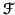

Next: Remark:
Up: The Fast Fourier Transform
Previous: Products
Contents
Index
In this section we note a number of useful properties of the Fourier
transform. Recall that we write
nf = F; we shall
sometimes write
instead of F. It is often convenient
to ignore the normalising constant 1/ in the formula, in
which case, we have
Fp = fj.
The constant is then explicitly inserted in the formula at
some later stage.
Proposition 6.4
Let
. Then
, while for p > 0,
Fn - p = . In particular, if n is even, then
.
Proof.
Since by definition,

is an
nth root of unity, we have
= = ; now compute.

Note also that, in general we have
F0 = f0 + f1 + f2 + ... + fn - 1, while if n is even, so
= (- 1)k, we have
Fn/2 = f0 - f1 + f2 + ... - fn - 1.
Theorem 6.5 (Parseval's Theorem)
Let
and let
be the discrete Fourier
transform of
f. Then
| fj|2 = | Fp|2.
Proof.
Recall that for any complex number
z, we have
|
z|
2 =
z.
From the definitions, we have
| | Fp|2 |
=  fj = fj fj = fj |
|
| |
= fj = | fj|2 = | fj|2 |
|
since the sum vanishes by Lemma
6.1 unless
j =
k. The result follows.
Subsections
Next: Remark:
Up: The Fast Fourier Transform
Previous: Products
Contents
Index
Ian Craw
2001-04-27